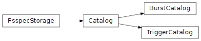

GIFTS Catalogs (gdt.missions.gifts.catalogs)¶
Note
The GIFTS catalog implementation and this document are currently similar to those provided by the Fermi Gamma-ray Data Tools, and will be revised in future versions.
Following the GIFTS mission launch, two public catalogs will be provided: a Trigger Catalog containing information about every GIFTS trigger, and a Burst Catalog containing data products for all GRBs detected by the ground segment pipeline during follow-up analysis of burst and TTE data generated by the onboard payload processor pipeline. Inspired by the NASA HEASARC Fermi-GBM catalogs, these will be implemented as online catalogs, providing operator-verified metadata and product files for detected bursts and their corresponding payload and ground localizations. The first version of the catalogs will contain GIFTS versions of the following data products for each detected event, where the Fermi-GBM FITS file format and product naming convention will be employed:
Later versions may extend the catalogs to include additional products such as detector responses and temporally pre-binned data per detector, along with visualization previews of localizations and detector light curves at multiple resolutions. Each catalog entry will have a version history, with the first version accompanied by a General Coordinates Network (GCN) notice.
Prior to launch, a prototype post-launch burst catalog containing exemplar (simulated)
products for six GRBs has been provided to illustrate the expected contents
of the eventual catalog. This exemplar catalog is currently hosted on
Zenodo (GIFTS Exemplar Gamma-ray Bursts (GRBs) Catalog v0.1.0), and
its GRBs are accessible using the BurstCatalog class, which will automatically retrieve and locally
cache a copy of the catalog products:
>>> from gdt.missions.gifts.catalogs import BurstCatalog
>>> burstcat = BurstCatalog()
>>> burstcat
BurstCatalog(catalog_type='bursts')
>>> burstcat.num_rows, burstcat.num_columns
(6, 17)
To see the columns provided by the catalog:
>>> print(burstcat.columns)
['trigger_name' 'trigger_time' 'trigger_timescale' 'trigger_significance'
'triggered_detector_mask' 'localization_quat_x' 'localization_quat_y'
'localization_quat_z' 'localization_quat_w' 'ground_ra' 'ground_dec'
'ground_uncertainty' 'payload_ra' 'payload_dec' 'payload_uncertainty'
'flux_1024' 't90']
The range of values for a column can be retrieved:
>>> burstcat.column_range("flux_1024")
(1.008, 32.1424)
A numpy record array with a subset of columns can be retrieved, for example, all trigger names and times:
>>> burstcat.get_table(columns=["trigger_name", "trigger_time"])
rec.array([('bn090510016', 2.63607671e+08),
('bn090902462', 2.73582201e+08),
('bn150629564', 4.57277563e+08),
('bn160804968', 4.92045218e+08),
('bn201105230', 6.26247073e+08),
('bn220624124', 6.77732320e+08)],
dtype=[('trigger_name', 'O'), ('trigger_time', '<f8')])
The catalog is available as a Pandas DataFrame, to which all Pandas operations can be applied, such as slicing based on conditionals:
>>> df = burstcat.to_dataframe()
>>> df[(df.ground_uncertainty <= 5) & (df.flux_1024 > 15)][["trigger_name", "trigger_time", "ground_uncertainty", "flux_1024"]]
trigger_name trigger_time ground_uncertainty flux_1024
1 bn090902462 2.735822e+08 3.288277 32.1424
5 bn220624124 6.777323e+08 2.702119 18.8842
Retrieving data products¶
Data products for a specific burst are also accessible via the BurstCatalog class using the burst
trigger_name. To retrieve a burst TCAT:
>>> tcat = burstcat.get_tcat(trigger_name="bn201105230")
<Tcat: GRB201105230>
To retrieve a burst TRIGDAT:
>>> trigdat = burstcat.get_trigdat(trigger_name="bn201105230")
>>> trigdat.trigtime, trigdat.triggered_detectors
(626247072.937016, ['G3', 'G4', 'G5'])
To retrieve the detector TTE products for a burst:
>>> ttes = burstcat.get_tte(trigger_name="bn201105230")
>>> [(tte.detector, tte.energy_range, tte.time_range) for tte in ttes]
[('G0', (20.96483039855957, 2000.0), (-132.6049679517746, 481.79247200489044)),
('G1', (21.094377517700195, 2000.0), (-132.5622079372406, 481.7971440553665)),
('G2', (20.94989013671875, 2000.0), (-132.60625994205475, 481.7934920787811)),
('G3', (20.394683837890625, 2000.0), (-132.60463798046112, 481.7946580648422)),
('G4', (21.148578643798828, 2000.0), (-132.60567390918732, 481.79617404937744)),
('G5', (20.88741111755371, 2000.0), (-132.6077619791031, 481.79198801517487))]
To retrieve a burst localization:
>>> loc = burstcat.get_healpix(trigger_name="bn201105230")
>>> loc.centroid
(247.49999999999997, 22.508004555237047)
Reference/API¶
gdt.missions.gifts.catalogs Module¶
Classes¶
|
GIFTS catalog for triggers |
|
GIFTS catalog for detected and confirmed bursts |
Class Inheritance Diagram¶
